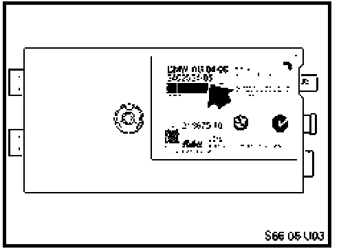
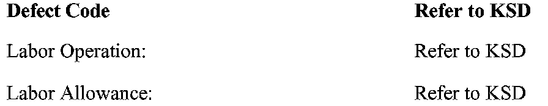

Audio System - FM Band Interference/Station Overlap
SI B 65 15 06Sound System, Cruise, Alarms, Monitors
August 2006
Technical Service
This Service Information bulletin supersedes S.M. 65 231 04 dated December 2004.
SUBJECT
FM Radio Has Interference or Radio Station Overlapping
MODEL
E83 (X3) from start of production up to April 27th 2006
SITUATION
The customer complains that in certain areas, FM radio has interference, or two radio stations on one frequency. This issue affects specific radio stations but not just with low signal power.
CAUSE
Hardware issue in the antenna amplifier
CORRECTION
Install an improved antenna amplifier with AI index 05 or higher.

Before installing the new part, make sure that it has the correct AI index 05 or higher on the part label.
PARTS INFORMATION

WARRANTY INFORMATION
Covered under the terms of the BMW New Vehicle Limited Warranty.

Disclaimer